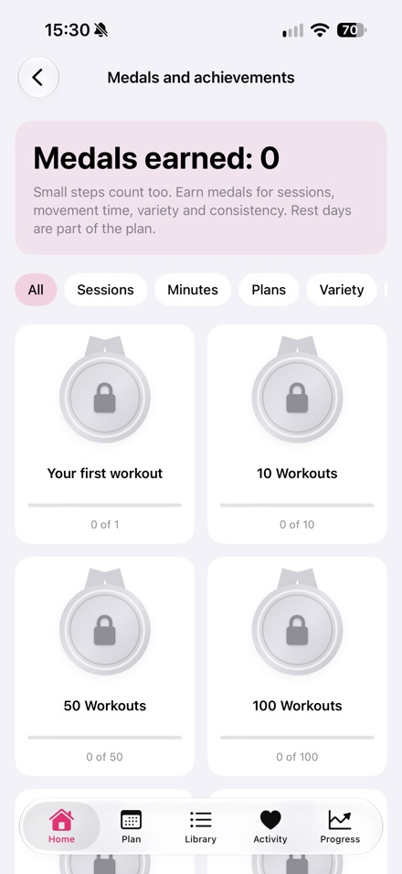

Written by Nikita Revin, developer of Tonus. Updated 16 October 2026 for the publicly available version 1.4.
Tonus is a free workout app for iPhone. It includes short home sessions, a flexible plan and six gym programs. No registration or subscription is required.
Press kit
Download product facts, the app icon and three screenshots from the published version.
Download press kit (.zip)Tonus 1.4
- iPhone with iOS 17 or later
- Free access; no registration, subscriptions or in-app purchases
- Home workouts of 5, 10 or 20 minutes; no-jump, standing and equipment-free options
- Flexible trainer: 12 workouts on selected training days; missed sessions move forward
- Six gym programs, exercise technique tips, timers and progress tracking
- Optional Apple Health; workout history and Health data stay on the device
- Plans and written instructions work offline; online videos require internet
- 60 exercises with videos; external video platforms may show their own ads
- Interface available in English
Screenshots from the published App Store version 1.4



Review inquiries
Nikita Revin · nik007rev@gmail.com
Tonus does not provide medical care. Stop if you feel pain or unwell. If you have health restrictions, discuss training with a qualified professional.
Download Tonus